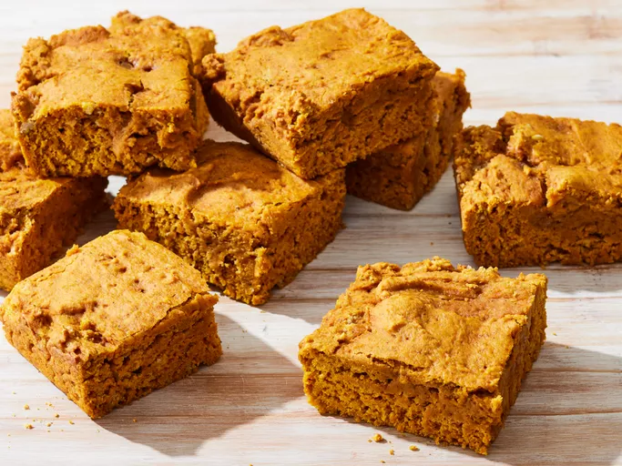

Vegan Pumpkin Pie Blondies

Photo by Dotdash Meredith Food Studios
Description
This vegan pumpkin dessert will please everyone at your table. Even the pickiest eaters will love these vegan pumpkin pie blondies.
- Prep time: 10 mins
- Cook time: 20 mins
- Total time: 30 mins
- Servings: 36
Nutrition Facts
- 61 calories
- 2g fat
- 11g carbs
- 1g protein
Ingredients
- 2 cups all-purpose flour
- ½ cup white sugar
- ¼ cup brown sugar
- 1 teaspoon baking powder
- 1 teaspoon baking soda
- ½ teaspoon ground cinnamon
- ¼ teaspoon ground cloves
- ¼ teaspoon ground ginger
- ¼ teaspoon ground nutmeg
- ¼ teaspoon salt
- 1 (15 ounce) can pumpkin puree
- 3 ½ tablespoons canola oil
- 1 tablespoon vanilla extract
Steps
- Gather all ingredients.
- Preheat the oven to 375 degrees F (190 degrees C). Lightly grease a 9-inch square baking pan.
- Sift flour, white sugar, brown sugar, baking powder, baking soda, cinnamon, cloves, ginger, nutmeg, and salt together in a bowl. Add pumpkin puree, canola oil, and vanilla extract to the flour mixture and stir until a thick batter forms. Pour batter into the prepared baking pan.
- Bake in the preheated oven until a toothpick inserted in the center comes out clean, 20 minutes.
- Remove from the oven and cool completely before cutting into 1 1/2-inch squares.